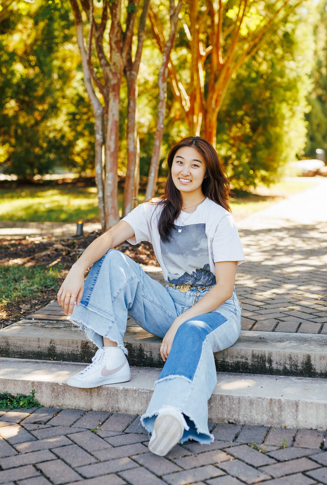

A digital portfolio.
see moreAbout Me

Hello! My name is Anna and I am a fourth year Data Science major with a Computer Science minor at the University of Virginia. I primarily focus on data design and am currently an interactive design research assistant at the Connected Data Hub here at the School of Data Science.
Explore this website to see some of my projects, skills, and experience in digital design and data science.
explore projects
back to top